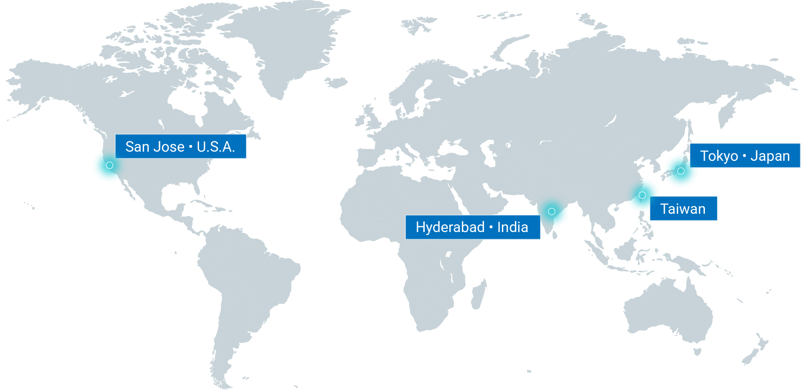

Global Presence
The headquarters is located in Hwaya Technology Park, Taoyuan, Taiwan, with an additional R&D center in Nangang, Taipei City. Globally, Senao Networks employs over 1,200 people, with R&D personnel making up 60% of indirect staff. Up to 8% of the company's annual revenue is allocated to research and development (R&D) investment.
In India, we operate our subsidiary with R&D, sales and manufacturing support for Make-In-India initiative, driving local product design, development and regional support to our global customers along with domestic. Our U.S. and Japan branches provide sales and technical support to ensure seamless service across their respective markets.

SMT Automated Production Lines
12 SMT lines equipped with automated optical inspection (AOI) to ensure solder quality meets 6-Sigma standards with defect rates under 50 PPM.
System Integration & Burn-in
72-hour full-load system burn-in testing prior to shipment, including thermal cycling and vibration testing, with a 99.8% pass rate.
Supply Chain Resilience
Dual-sourcing strategies for critical components and local inventory caching ensure on-time delivery with 85% BOM substitution coverage.
ESG Green Manufacturing
Manufacturing facilities hold ISO 14001 certification, utilizing 100% renewable power with a 92% waste recovery rate.
Need More Technical Information?
Our technical consultants will assist you in designing the most optimal solution.